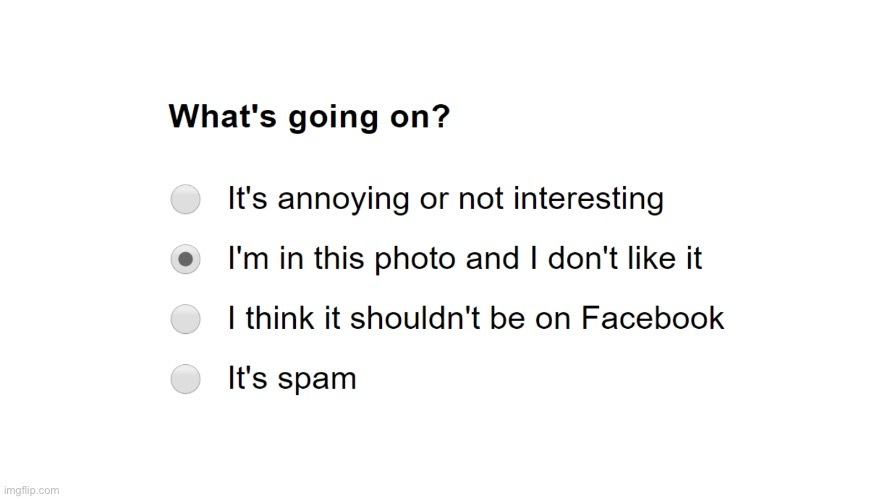
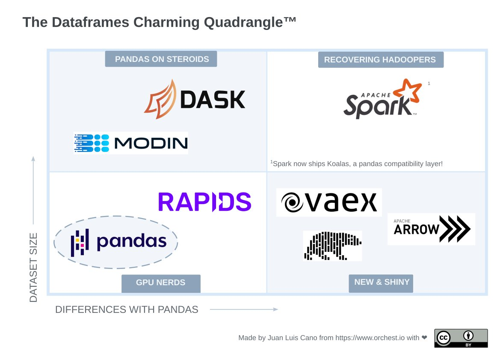

わが生涯に一片の悔いなし!!
RT @cmaureir: Tomorrow is my last day at #PyConUS2022 if you know someone from Ecuatorial Guinea, or that knows pythonistas from there PLEA…
Replying to @juanluisback
https://twitter.com/anacondainc/status/1520447158603890691
Replying to @juanluisback
https://twitter.com/sophiamyang/status/1511352323947302915
.@anacondainc supporting @PyBeeWare by hiring @freakboy3742, @pypyproject by hiring @antocuni, and kickstarting @pyscript_dev sends a very clear message: they want Python *everywhere*.
Hats off to one of the companies I admire the most 🩠and to @pwang for his leadership!
Replying to @AllenDowney
I'm sorry you're having this experience. As others have replied in this thread, the mamba developers are very competent and will be happy to see your bug reports. To those replying that pip, poetry, or pdm are alternatives to conda/mamba, I'm sorry to say they're not.
Replying to @Jimena_y_yo
This one took some time but it's finally published! Whether you're a seasoned @vaex_io user or someone interested in it, please give it a read, I'll be happy to read your comments and suggestions 😠https://twitter.com/orchestofficial/status/1521149357063831552
RT @laysauchoa: 🤩 @europython newsletter published 🔠my insights about the amazing @PyCampES ⛺ï¸
Find out here!!! ⇩
RT @pwang: PyScript is the #1 trending project on Github right now! Gratz @b_smoke @PhilippJFR!
https://github.com/trending
"Leaders of the Free* World"
*Terms & Conditions apply
¡Vuelve @wtmspain y vuelve Campus Madrid! 😠#WTMSpainCalcetines
Viendo a @quierodata de @kairos_ds #KairósWTM
RT @PyConES: 💣🔥BOMBAZO INFORMATIVO💣🔥
¡¡Que vamos a tener una keynote de nada mas y nada menos que la mismisima @maidotgimenez!!
Mai nos or…
Replying to @wrlach
This pull request tries to add more information to the logs so you don't have to wonder https://github.com/pypa/pip/pull/10937 cc @ThePyPA
Replying to @ScalingoHQ and @outscale_fr
I really liked Scalingo when I tried it but not having a "go to sleep" free tier was a deal-breaker for me :(
Me, looking for "alternatives to Heroku" just now https://twitter.com/joulee/status/1522005823496417280
Replying to @juanluisback
Also, it's amazing how, when folks here ask for "alternatives to Heroku", some people respond "Netlify" or "AWS"
Folks, if you don't know what Heroku is... it's okay to stay silent
Replying to @juanluisback
Now, the useful tweet: so far I found @render, @digitalocean App Platform, @railway, and @flydotio. Special mention to @ScalingoHQ, which however doesn't have a free tier.
Then we also have Dokku and Coolify as open-source, self hosted alternatives.
Thoughts?
Replying to @GergelyOrosz
This is very interesting. How do you replicate it in a remote setting? Thanks in advance
Replying to @ana_valdi
How can we prevent such things happening? 😓
RT @poliastro_py: Tomorrow we resume our weekly community calls! We have a lot to discuss ✨ If you're a poliastro user, feel free to join o…
😠See you all at #PyConLT very soon! https://twitter.com/PyConLT/status/1522126452543549440
Replying to @FarazPatankar13, @ixek and @Railway
Well, since you replied 5 minutes ago until now I have managed to deploy an app I already had in Heroku, the process has been flawless 😱 @Railway looks like a strong contender!
Replying to @ralfgommers
Looks awesome! It would be amazing if @quansightai would disclose more details about the compensation policy - if not a salary range, at least if it's location-based or not
Replying to @ixek, @ralfgommers and @quansightai
Thanks @ixek 🙏
Replying to @Adalab_Digital
¡Hola! ¿PodrÃais contar un poco más sobre rangos salariales? HarÃa más fácil difundir la oferta. ¡Gracias!
Replying to @ralfgommers, @quansightai and @ixek
Thanks for the pointer @ralfgommers, I agree it's a nuanced topic.
What I can parse is that the range would be around 62-125 kUSD for top seniority and full-time contract. But that assumes NEP 48 applies to @quansightai, and there's still no lower bound. Better than nothing 🙂
Replying to @e_mydata and @Fairphone
Wow, that was unexpected 😠Replying!
Replying to @Adalab_Digital
Mi pregunta iba por cuál es *vuestro* rango salarial, o sea: el máximo que estáis dispuestos a pagar, y el mÃnimo que pensáis que una persona en un puesto asà se merece. Soy fan de @Adalab_Digital pero no difundo ofertas sin rango. No quiero polemizar, asà que lo dejo aquÃ.
Noticias sobre Python cientÃfico de la semana, episodio 32 🐍⚙️ El épico lanzamiento de @pyscript_dev, versiones nuevas de JupyterLab, Airflow y pandera, DALL·E 2 en abierto, más visualizaciones en mapas, y a vueltas con Heroku
https://astrojuanlu.substack.com/p/episodio-32
¡SuscrÃbete por correo! 📫
RT @annalogik: ¡Estamos en directo! @PyConES @draxus @fergunet @dukebody @cmaureir @Jimena_y_yo y más...¡Vente! https://t.co/k8pFGZquDO
Replying to @sim_pod

RT @marktenenholtz: What data scientists think they need for a good solution:
• Bigger servers
• Bigger data
• Bigger models
What they SH…
¿Los #pyononos22 llevan ketchup? 🤔
Proud @firefox user on desktop and mobile ♥️ #Firefox100
$ sudo apt install texlive-full
After this operation, 5.319 MB of additional disk space will be used.
Do you want to continue? [Y/n]
Yes, because it's "conference paper" season for @SciPyConf #PhDchat
RT @erinmikail: How to foster not-men leadership in tech:
• “I believe in you”
• “I trust you”
• “if you’re struggling, I’m here for you”…
RT @lapajaraenbici: 🚲Arranca el finde💫
¿Qué te apetece hoy �
Os recordamos que tenemos un descuentito, a cambio de una encuestita, para un…
So there are essentially no good online apps to schedule recurring meetings 😤
@doodletweet can be made to work, but it's tedious
when2meet UI feels obsolete, unclear timezone support
http://crab.fit timezone support is directly broken https://github.com/GRA0007/crab.fit/issues/138
RT @poliastro_py: Do you want to participate in our weekly community meetings? It's time to choose the best time and date! Join our chat to…
RT @DafneCalvo: 💻💥 ¡Nueva edición del @VLCTechFest! El 18 de junio en @LasNaves. Puedes presentar tu propuesta hasta el 27 de mayo.
ℹ️ Má…
Replying to @freakboy3742
Hi! Are you able to disclose more details about the salary range for the position? (All community channels I know have this as a hard requirement to publish a job offer)
Replying to @LetsfindApp and @doodletweet
I didn't know it, I just tried it, and it doesn't do what I want. Letsfind is not for recurring meetings, rather an alternative to Doodle and similar.
RT @InvestInOpen: Today, we're sharing our plans for the Catalog of Open Infrastructure Services (COIs) 🥳
We invite all open infrastructu…
Replying to @freakboy3742
Thanks for getting back. Yes, I understand - see this other thread where I asked the same thing https://twitter.com/juanluisback/status/1522140097541513220
Qué bueno es el soporte de @dinahosting carallo ğŸ‘🼠No me sacan de ahà ni con una espátula
RT @PyLadiesBCN: Come and join us in our next in-person PyLadiesBCN meetup!! Juegos electromecánicos con Micropython with @alecura https://…
RT @laysauchoa: git add -p . > git add .
To install the requirements from a conda/mamba environment.yml file in an existing environment (source: https://stackoverflow.com/a/43873901/554319)
RT @PyDataMadrid: ¡Ya tenemos los detalles de la reunión de mayo! 🨠Visualización interactiva con Plotly y concurrencia para extracción de…
Replying to @reydelhumo
Jaj, me encanta!
Replying to @michaelwaskom
> What are we doing here?
Using Google 🙃
Replying to @remoquete
I can sympathize with "All existing programming languages are the wrong tool because they are designed for specialists", but then you have a problem: teach a bespoke language to learn concepts, only to discover that it's useless in the industry. What to do then?
Replying to @remoquete
In any case, folks got triggered because the original thread summarizes as "Python is hard for beginners" which is against what everybody says, but it raises excellent points and we should all read it carefully.
Replying to @remoquete
Last point: listen to the experts on computing education, like @guzdial. For example, this research on "teaspoon languages" https://computinged.wordpress.com/2021/12/22/helping-social-studies-teachers-to-teach-data-literacy-with-teaspoon-languages/
Replying to @Jimena_y_yo, @Infogon and @dianait_
Como dice @Jimena_y_yo, pytest a saco!
Este artÃculo de @tacosdedatos cubre lo básico y cosas intermedias como parametrización, fixtures y más https://old.tacosdedatos.com/pruebas-unitarias-pytest
RT @orchestofficial: Check out Data Overload Vol. 9, the latest edition of our monthly newsletter! ⚡ https://mailchi.mp/3f53f27bf0c5/orchest-in-2022-data-overload-vol-15453498
Highlights: 👇…
Replying to @sancfc, @npatarino, @Jimena_y_yo, @PyConES and @GirlsinTechES
¿Dónde están los detalles de al edición 2022? :D
Replying to @hillelogram, @remoquete and @VisiData
I don't think learning Excel teaches programming skills, but maybe we're talking about different things here
Replying to @hillelogram, @remoquete and @VisiData
Thanks for the clarification!
Replying to @richardpelgrim
There are two ways of bridging the gap: raising the lower bound or lowering the upper bound.
I believe we can't do the former (people won't pay more taxes), and we don't dare do the latter...
Replying to @reydelhumo, @choldgraf and @readthedocs
I recall that @choldgraf reviewed this guide when I was working on it! 😋
Replying to @victorvicpal, @Jimena_y_yo, @Infogon, @dianait_ and @tacosdedatos
Y yo aquà pensando "me suena haber dado una charla sobre esto pero no la encuentro"... 😅 ¡gracias @victorvicpal!
Replying to @Jimena_y_yo, @victorvicpal, @Infogon, @dianait_ and @tacosdedatos
Replying to @permutans
cc @readthedocs
Replying to @PyConES
Negro = Python 2 💀
Anyone can notice this trend: Google products are increasingly obscure, arcane, difficult to use, buggy.
Using alternatives is not activism, it's a necessity! https://twitter.com/PlausibleHQ/status/1524291828543107073
RT @richardpelgrim: Did you know @geopandas has a super helpful interactive mapping feature?
Just call .explore() on your GeoDataFrame:
c…
Replying to @eramirem and @BeyondMeat
¿Aún no llegó @HeuraFoods?
"Your data is YOUR data" 😠@e_mydata my @Fairphone 4 has arrived!
Replying to @e_mydata and @Fairphone
https://twitter.com/juanluisback/status/1524368477246611457
RT @hdv: Developers, please test your websites in Firefox!
Replying to @sethmlarson
Error messages need to be more informative, currently they are crap and we somehow are OK with it. https://support.mozilla.org/en-US/questions/1376466
RT @poliastro_py: poliastro 0.16.3 is available 🚀 we fixed some issues with Astropy 5 on Python 3.10.
Read more in our monthly updates! ht…
RT @PyDataMadrid: ¡Ya están abiertas las inscripciones para nuestor evento de la semana que viene! No te quedes sin tu plaza 😱 https://t.co…
> Speakers will be notified of their proposal acceptance status by 12 May, 2022.
@pydatalondon 😬
Replying to @aherranz and @Twitter
¡Son terribles las recomendaciones! Y eso que la Inteligencia Artificial iba a conquistar el mundo...
The best Python conference ever is back! https://twitter.com/EuroSciPy/status/1524810608633430021
Replying to @abey79
cc @readthedocs
> We are pleased to inform you that your proposal "Beyond pandas: The great Python dataframe showdown" to PyData London 2022, has been accepted!
@pydatalondon, there we go again after all these years! 😍😍
If I ever have a podcast or vlog, it will be called #datadrama 🤠https://twitter.com/pdrmnvd/status/1524834241447546880
Replying to @cheukting_ho and @pydatalondon
See you at @PyConLT before that! :D
Replying to @dontusethiscode and @pydatalondon
Maybe we should have a conversation before it happens, since I'm giving this talk in several other events 🙃 do you have time for a chat? I'll send you a DM
Replying to @dontusethiscode and @pydatalondon
I'm very sure that I'll learn a lot of things I don't know, reconsider things I had considered, and highlight points I have dismissed :) Sent!
Replying to @dontusethiscode, @cheukting_ho, @pydatalondon and @PyConLT
You can rumble in my talk one month before PyData London then! ğŸ˜
RT @sebastiandres: De todos los newsletters en los que estoy inscrito, el Juan Luis @juanluisback es lejos el que más disfruto (y el que le…
Replying to @sebastiandres
¡Mil gracias Sebastian, me alegra mucho leer eso! Con lo repletas que están nuestras bandejas de entrada, es un honor ğŸ˜
Replying to @juanluisback
Now I remember where did I get this from 😄 https://twitter.com/Jas_Hughes/status/1450537609768226816
As of last Friday, you can now load the NYC taxi dataset ("TLC Trip Record Data") in Apache Parquet format! See official notice at https://www1.nyc.gov/site/tlc/about/tlc-trip-record-data.page, and @richardpelgrim video for a demo 👇🼠https://twitter.com/richardpelgrim/status/1526154500838510592
RT @cahdoria_: Anyone here works at GitHub or knows anyone who does? Would love to know more about the company culture 🥳
RT @melissawm: "While creating inclusive environments is essential for the household (or section/department institute) to thrive, the labou…
@AdamChainz you're trending bro!
No me hago eco de causas sociales en esta cuenta por mi salud mental, pero esta me toca muy de cerca: la sanidad madrileña va en caÃda libre y ya hasta el personal médico está de huelga. Que no te cuenten milongas: te están robando. Infórmate. https://twitter.com/jccanbal/status/1525120378472910849
This joke keeps coming from time to time, but what about @ProjectJupyter prompting you to pick a filename right after you click "new notebook"? (With the default being `Untitled` of course 😉)
One extra click, but perhaps worth the hassle. Any UX experts in the room? @isabelapf2 https://twitter.com/martinRenou/status/1524285735133749250
Replying to @yuvipanda, @ProjectJupyter and @isabelapf2
Never been a fan of these random names but perhaps it's better than Untitled 😃 in any case, a small dialog prompting for a change would be nice I think.
@yuvipanda how hard can it be to do this as a Jupyter extension?
RT @PyConLT: Check out PyCon LT 2022 Schedule!
Meet †PyData track🚀speakers👇
@JevGamper, @aicoding_, @juanluisback, @tweet_raddar, @nithish…
Replying to @Mbussonn, @ProjectJupyter and @isabelapf2
Similar to what Google Docs does then. Do you happen to have a link to the proposal?
Replying to @martinRenou, @ProjectJupyter and @isabelapf2
Just do a search for "untitled ipynb" here on Twitter... it's insane 🤪
I'd love to hack an extension, maybe the excuse I need to learn :)
RT @condaproject: Just gonna leave this here...
(#libmamba solver installing #scipy and #tensorflow under 11s)
Is there anything like @MeetdotCoop, but with @jitsinews? Getting tired of @bigbluebutton, too buggy 😓
Since this "Why I no longer recommend Julia" post is making the rounds, and people have been asking my opinion about Julia (as a Python guy) over the years, I feel it's a good time to speak. First, the post:
https://yuri.is/not-julia/
Second, a long thread.
Replying to @juanluisback
Important disclaimer: I have zero experience with Julia. I haven't even ever installed it. Take everything I say with a grain of salt.
But I think my personal experience as a Python enthusiast has some parallelisms with what I see now in the Julia community.
Replying to @juanluisback
The criticism can be divided into three:
1️⃣ The ecosystem is buggy,
2️⃣ The language does not live up to its expectations,
3️⃣ The community is overenthusiastic and does not take criticism well.
Let's examine each claim.
Replying to @juanluisback
By the way, it is very important to read the comments on the orange site https://news.ycombinator.com/item?id=31396861 right after the post itself, because they explain a lot of things.
Replying to @juanluisback
1️⃣ It's painful to read that long list of issues. But who hasn't suffered while using bleeding-edge tools?
The hard truth is that nurturing a library ecosystem takes a lot of time and sustained effort. Making a prototype is fun, but evolving it isn't everyone's piece of cake.
Replying to @juanluisback
Others have talked at length about the struggles of open source maintainers, so it's pointless that I repeat them here. The only thing worth repeating is that, for successful libraries, the stream of bug reports and feature requests never ends.
And someone needs to take care.
Replying to @juanluisback
When the most blatant bugs are fixed, when the error messages are descriptive, when the docs are comprehensive enough, and in general when the Developer Experience reaches some acceptable threshold, people can become productive with a library.
Until then, it's just pain.
Replying to @juanluisback
Has the Julia ecosystem reached this point of maturity? Apparently not. Does it mean it will never reach it? Absolutely not! The article says: *right now*, there are correctness issues. But don't overestimate procrastinating academics: that's how the SciPy ecosystem was born 😉
Replying to @juanluisback
2️⃣ Julia was born to "fix the two-language problem", and apart from that, it promises endless composability.
Yuri points out that such composability is failing to meet expectations. This can be a mix of ecosystem bugs (see above), language design choices...
And human factors.
Replying to @juanluisback
In summary: many Julia libraries have bugs. They can be fixed. Julia folks are very smart and capable of doing it. But open-source maintenance is a long-term endeavor. And bugs must be taken seriously first. (More on that very soon.)
Replying to @juanluisback
As the top HN comment acknowledges, "some fundamental design decisions [are] contributing here", and that one of the things that harm composability is that "one or the other package is making implicit assumptions that are not documented".
Think about this for a moment.
Replying to @juanluisback
Python is having its own reckoning moment with gradual typing. I, for one, don't like the way it's evolving and how it makes my code look. But I acknowledge it's quite useful.
Julia will probably need, as it's said on HN, "more language support for interfaces and verification".
Replying to @juanluisback
Humans make coding mistakes all the time. (By the way, Autopilot does too 😉). So, if a language is built upon the idea that humans will write proper code without undocumented implicit assumptions, I don't think it will have a bright future.
That's where tooling comes in!
Replying to @juanluisback
But the list of tools to fight against software rot goes on: multi-package integration tests, complex CI setups, linters...
Is this fun? Maybe for some folks. But not for the scientific developers that want to *use* Julia, that's for sure.
I know this because I'm like them.
Replying to @poliastro_py
To be trained as an Aerospace engineer, a biologist, or a physicist; write some tiny, ugly code to scratch your own itch, and then gradually evolve it into a properly engineered, reusable software library *as you learn how to do such a thing*.
It makes you feel bad all the time.
Replying to @juanluisback
The SciPy ecosystem still has some pieces that were developed without good software engineering practices in mind. One such tiny piece is @poliastro_py, my own Python library for Astrodynamics, which stands on the shoulders of Astropy and numba.
You have no idea how hard it is.
Replying to @poliastro_py
And if it sucked for me, and it sucked for every scientific developer I know around me, I'm sure it sucks for many Julia enthusiasts too.
Add to the mix the fact that Julia is barely used outside scientific circles and you have a perfect storm coming.
Replying to @poliastro_py
3️⃣ Yuri says "the project leadership does not agree that there is a serious correctness problem".
The second HN comment, by a prominent member of the Julia commuinty, starts with "Everything has correctness issues somewhere".
Well... that escalated quickly.
Replying to @poliastro_py
In summary: effective software development requires languages that are robust against human failure, complex tooling that steals precious time from "doing science", good software engineering practices...
And good culture. Which takes us to the last point.
Replying to @poliastro_py
It's natural that folks get defensive about their language of choice. Heck, it still happens to me quite often! Especially now with all these "Python is bad" articles popping up everywhere.
But it's an emotional reaction, and we should acknowledge it as such.
Replying to @poliastro_py
One day I was showcasing Python to one of the research groups of my university, who were MATLAB power users. When they asked "how do you manage large codebases", I didn't have a good answer (I had no experience!). Then I started criticizing MATLAB making some uninformed claims.
Replying to @poliastro_py
I remember my young days, when I was pushing Python everywhere. A guy working at a big European aerospace contractor told me that "Python is not operational", and I was *full of rage*.
But because of this rage, I made several mistakes when trying to "convert" people to Python.
Replying to @poliastro_py
You guessed it right: I completely lost them, and I'm confident they are still using MATLAB.
I think this is exactly the stage Julia enthusiasts are at.
Replying to @poliastro_py
Example 2: "Just put Julia in production" https://twitter.com/Viral_B_Shah/status/1224362465779163138 (Remember 1️⃣ correctness bugs and 2️⃣ lack of good tooling *right now*? Imagine 2 years ago)
Replying to @poliastro_py
Example 1: "Julia is faster", which is mostly true, but then you go and make totally crappy benchmarks https://twitter.com/pwang/status/1488902046841548805
Replying to @poliastro_py
(Ah and stop directing tweets at Space Karen like he's going to solve all the world's problems please 😉)
Replying to @poliastro_py
I have lots of sympathy for Julia enthusiasts because I'm an "enthusiast" too. That's how languages grow right? Folks put them to the front, even before they're ready.
...or does it happen the other day around? When they're ready, they become successful.
Judge for yourselves.
Replying to @poliastro_py
I remember clearly we went through various phases: first "just migrate your code" proved to be very hard (various public writeups by large companies prove it), so then we had this little tool called 2to3 that magically fixed all problems.
Turns out it was the wrong strategy!
Replying to @poliastro_py
Python had a dark moment in its history that started with this "you're doing it wrong" toxic attitude. This moment was so critical that some folks feared for the future of the language.
"Just migrate all your code from Python 2 to 3".
Yep, "just" does a lot of heavy lifting!
Replying to @poliastro_py
I remember very clearly when this strategy changed around me: after this 2013 blog post by @OndrejCertik https://ondrejcertik.blogspot.com/2013/08/how-to-support-both-python-2-and-3.html that encouraged folks to support Python 2 *and* 3 with the same codebase.
Exactly what we needed: a non-disruptive, gradual migration path.
Replying to @poliastro_py and @OndrejCertik
If there are bugs, they have to be acknowledged. If there is bad tooling, it has to be created. If there are systemic problems, they have to be addressed. If there's constructive criticism, it has to be celebrated. If the developer experience is bad, it has to be fixed.
Replying to @poliastro_py and @OndrejCertik
Wrapping up this long thread.
We can't discount human factors in software engineering, and scientific software is no exception. Toxic attitudes harm insiders (whose bad experiences "feel diminished or downplayed") and outsiders (who suspect overzealous "marketing").
Replying to @poliastro_py and @OndrejCertik
When all the things above happen, I predict that Julia will be an incredibly successful language. Even if they don't fix the "two-language problem" as originally stated, because, you know: there will always be a second language 🙂
Replying to @juanluisback
Of course I meant "don't underestimate". Space Karen, please buy Twitter dot com and give us an edit button
Replying to @helge_e
Thanks @helge_e, I appreciate your support on this more than anyone else's!
RT @remoquete: Any sufficiently complex technological challenge is a social challenge. It requires people working together, which in turn r…
RT @juanluisback: Since this "Why I no longer recommend Julia" post is making the rounds, and people have been asking my opinion about Juli…
RT @pdebuyl: Good read on #Python and #JuliaLang , on open source scientific programs and communities!
Replying to @arclight
Thanks a lot for your comments! Glad to see this is resonating with some folks
Trying out http://pola.rs to examine the #DevEcosystem2021 raw data: 57 % of Pythonistas use Linux, compared to 49 % of overall devs! 🐍🐧 @jetbrains
RT @braaannigan: Looking at github stars for the next generation data analysis libraries. Very rapid growth for Polars and DuckDB. https://…
Replying to @cahdoria_
https://twitter.com/juanluisback/status/1516677125012705282
Replying to @cahdoria_
I mean... they surely *are* the top companies working in AI Ethics. But they are also the top companies working in AI Evil 😂
We should have an "AI Ethics relative score", sth like
(ethics - evil) / revenue
RT @danielpearson: Unpopular opinion: Every tech employee should be able to understand cohort analysis.
RT @anajsana95: Europe leads in academic research, but does it lead in #opensource adoption? 🤔 Great BoF on The World of Open Source Survey…
#PyDataKairos edición San Isidro! 🌺 Arranca @PyDataMadrid en las oficinas de @kairos_ds
Replying to @albergcg, @PyDataMadrid and @kairos_ds
Replying to @PyDataMadrid, @aicoding_ and @kairos_ds
Y en todo caso, ¡si quieres buscamos un momento y te cuento más la semana que viene en @PyConLT !
RT @kairos_ds: El meetup de @PyDataMadrid ha comenzado con @juanluisback, @quierodata y @IrnMM dándonos la bienvenida. 🤩
Y seguimos con la…
Replying to @IrnMM and @PyDataMadrid
🥰 ¡En @kairos_ds sà que moláis! Gracias por alojarnos y espero que nos veamos pronto⚡️
RT @orchestofficial: After reading another debate about notebooks in the @mlopscommunity Slack, it's a good moment to repeat that we love t…
Replying to @david_bonilla
Esta persona pasó las entrevistas correspondientes. ¿No le preguntaron qué era una landing page? ¿Se dieron cuenta después de contratarla? Lo siento pero huele a podrido lo mires como lo mires.
RT @fchollet: The dominant intellectual current in AI research today is the belief that we can (and soon will) create human-level AI withou…
Replying to @agambrahma and @WolframLanguage
Apparently even the Wolfram language is plagued with inconsistencies https://blog.wolfram.com/2019/04/02/why-wolfram-tech-isnt-open-source-a-dozen-reasons/#comment-135520 (Szabolcs, the author of the comment, is also this person https://mathematica.stackexchange.com/users/12/szabolcs)
RT @RitchieVink: This weeks release of #python #polars shows that even on single threaded code there are quite some performance gains possi…
RT @HenrySchreiner3: pypa/build 0.8.0 is out, with better error reporting, Python 3.11 support (including tomllib), a bit more validation,…
Replying to @juanluisback
More info in this somewhat convoluted thread https://discuss.python.org/t/python-tags-specific-version-of-interpreter-or-minimum-version/7831
A cp37-abi3 wheel can be installed on Python 3.9 🤯
"PEP 384 introduced the idea of the limited Python API, which would have a stable ABI enabling extension modules built with it to be used against multiple Python versions. This is also known as abi3."
https://pyo3.rs/v0.16.4/building_and_distribution.html#py_limited_apiabi3
Replying to @juanluisback
PEP 384 "Defining a Stable ABI" https://peps.python.org/pep-0384/
PEP 425 "Compatibility Tags for Built Distributions" https://peps.python.org/pep-0425/
Juanlu finishing a blog post on Polars, pixel on canvas, ca. 2022
Replying to @remoquete, @e_mydata and @Fairphone
After two weeks I can say that I love the phone (the hardware is way more expensive that the ones I usually get, which probably helps). The only thing that I still could not get to work is my bank app (flaky app store to be renewed soon) and https://community.e.foundation/t/account-manager-stuck-with-authentication-failed-despite-correct-credentials/41222?u=astrojuanlu
RT @PyConLT: We are sold out!
https://pycon.lt is updated with the talks you can start planning your time for the conference. http…
Replying to @e_mydata
What's the relationship between @e_mydata and @murenacom?
Replying to @reydelhumo, @PyConLT and @readthedocs
👋🏼😁
Replying to @fmvilas
https://twitter.com/leftist_logical/status/1529234714556522498
RT @luis_in_brief: Last week a lot of people who are genuinely concerned about diversity in open source also posted 24/7 about their paid t…
Replying to @brunosan
Stay safe Bruno ♥️
I'm in Vilnius... Thanks to the pilot, of course! 😜 #pyconlt @PyConLT
Lots of research went into this one 👀 Let me know what you think! https://twitter.com/orchestofficial/status/1529432107344310272
Replying to @metabase
EXPLAIN ANALYZE + https://explain.depesz.com/
RT @reydelhumo: I'm in Vilnius, already prepared to attend @PyConLT
Find me tomorrow and let's talk about @readthedocs. I'll be with this…
RT @orchestofficial: @RitchieVink @ApacheArrow We will present a talk inspired by this series of blog posts at @pyconlt *tomorrow* 🚨 and at…
RT @nomad421: I’m pretty excited to give http://pola.rs a try! This looks really really interesting (https://www.orchest.io/blog/the-great-python-dataframe-showdown-part-3-lightning-fast-queries-with-polars).
It's #pyconlt time! If you want to know what's "beyond pandas", see you at 13:30 at the PyData track!
And if you want to know more about @orchestofficial, talk to me :D
RT @aicoding_: I guess I cannot back off now 🤣
#PyConLT #PyData
Replying to @juanluisback
#pyconlt getting started!
Replying to @juanluisback
Spotting the #PacmanRule at #pyconlt @ericholscher
Replying to @juanluisback
Keynote by @llanga to open #pyconlt about how to use mypyc to make Python faster
Replying to @juanluisback
When we talk about "the dynamic nature of Python", we mean things like this: calling 𝚍𝚊𝚝𝚎𝚝𝚒𝚖𝚎.𝚍𝚊𝚝𝚎.𝚝𝚘𝚍𝚊𝚢() has at least seven levels of indirection 🤯 #pyconlt
Replying to @juanluisback
"Since Python 3.6, we've had a constant increase in performance" #pyconlt
Replying to @juanluisback
"Fortran still a viable thing for Python extensions" through f2py!
And I hope it stays viable for a long time, I'm a @fortranlang fan 😉 #pyconlt
Replying to @marlene_zw and @orchestofficial
Thanks @marlene_zw ! Will I meet you at @pydatalondon or @EuroSciPy or Python at Scale? 😃
Replying to @juanluisback
Upcoming trend: rewritten Cython code in Rust? Related: https://twitter.com/juanluisback/status/1455270677213294593
#pyconlt
Replying to @juanluisback
Now @llanga making the case that Cython is ugly 🙈 I tend to agree, but beauty is subjective 🙃 #pyconlt
Replying to @AdamChainz and @orchestofficial
Typical from my region! https://es.wikipedia.org/wiki/Parpusa
Replying to @llanga
The downside of reimplementing stuff in C: the case of the asyncio event loop:
1⃣ No longer a nice "reference implementation" to learn Python
2⃣ More difficult to debug
#pyconlt
Replying to @juanluisback
"Using type hints for performance optimizations is left as an exercise for the reader." 🤣
https://peps.python.org/pep-0484/
#pyconlt
RT @PyConLT: We are ready for @PyConLT 2022!🐍
Replying to @juanluisback
I have a million questions about mypy and mypyc, but nonetheless @llanga opening keynote was packed with insights!
Now... Allow me to retire to a peaceful place to relax before my own talk :) #pyconlt
Replying to @juanluisback
All ready! See you very soon at #pyconlt to talk about what's beyond pandas. Here's a sneak peek 😉
https://pretalx.com/pycon-lt-2022/talk/9CMPF3/
RT @dontusethiscode: Who IS this guy? @juanluisback
RT @cheukting_ho: @juanluisback talking about what is beyond pandas data frame @PyConLT
Replying to @juanluisback
It's done! Slides from my talk "Beyond pandas: The great dataframe showdown" at #pyconlt are at https://github.com/astrojuanlu/talk-dataframes, with notebooks you can import directly to @orchestofficial
And here is "The Dataframes Charming Quadrangle™"

Replying to @orchestofficial
Attending the second half of the ipyvizzu tutorial, quite cool! Demo notebooks are here https://github.com/vizzuhq/ipyvizzu/tree/main/docs/tutorial #pyconlt @VizzuHQ
Replying to @orchestofficial and @VizzuHQ
Well, I couldn't resist @dontusethiscode encouragement and I signed up for a lightning talk 😉 See you soon again at #pyconlt
Replying to @juanluisback
There we go! How to go to Mars in 5 minutes with Python using @poliastro_py :
https://github.com/poliastro/lightning-talk
Replying to @MissingClara and @Applied_Ion
has done some epic work on this area!
RT @aurimasnausedas: Great talks by @dontusethiscode, @aicoding_, @juanluisback & others yesterday @PyConLT. Thank you all! Can not sit st…
Replying to @juanluisback
On to the second day of #pyconlt!
Replying to @dontusethiscode
I assume that people want to see the conference, but I like to start the day with a human touch ğŸ˜
Replying to @juanluisback
First keynote of the second day by @andrejusb about @katana_ml #pyconlt

Replying to @LukasValatka
Of course! Buses here work so well, I'm impressed 🙌🏼
Replying to @andrejusb and @katana_ml
Attending the #pyconlt Education Summit too, looks like kids were so excited about learning programming ğŸ˜
RT @FranOliverr: Lets go with day 2! #python-rocks
#pyconlt
He tenido la oportunidad de compartir un almuerzo con @tiangolo y mi amigo @reydelhumo hablando sobre sostenibilidad en open source, cómo manejar proyectos grandes y exitosos... Me quito el sombrero con la humildad de Sebastián, muchas gracias por todo el trabajo que haces ♥️
Replying to @juanluisback
Magic happened at #pyconlt 🥰 https://twitter.com/juanluisback/status/1530146123415011330
Replying to @juanluisback
Very informative talk by @montjoile about outlier detection and removal! #pyconlt
Replying to @inga_pop
at #pyconlt heard a shitty conversation behind her belittling social science...
...and now she's taking epic revenge. QUEEN 👑
RT @inga_pop: I think it's a win. I hope whoever they were, they will think twice before talking shit about others :)))
Replying to @FranOliverr
La sesión es un remix malÃsimo de un trabajo de @anxodio porque esta idea se me ocurrió hace 15 minutos y no he podido preparar nada 😅
Replying to @nithishr and @PyConLT
Original session by @anxodio , I did a very bad remix because I thought about this 15 minutes ago and didn't have time to prepare anything 😅
Replying to @juanluisback
Some musical magic happened at #pyconlt https://mobile.twitter.com/FranOliverr/status/1530173518142492672
Replying to @juanluisback
And now, @tiangolo is closing #pyconlt talking about concurrently!
RT @dontusethiscode: If you were to reïmplement pandas from scratch, would you preserve the `Series`/`DataFrame` distinction? What about th…
Replying to @juanluisback
That's a wrap! Thanks to the @PyConLT organizers for a flawless event, and to my company @orchestofficial for sponsoring my trip.
See you next time #pyconlt! 👋
Replying to @apachaves and @orchestofficial
Thanks a lot @apachaves ! Watch out for a PyCon near you :) https://www.pycon.fr/2020/ cc @pyconfr
Replying to @GoolerES
😁😁😁😁😁
RT @RitchieVink: This weeks release of #python #polars has a new optimization that uses the fact that a groupby key is sorted.
This can ha…
Replying to @FSanzGarcia
> No creo que haya nadie que crea que hay una meritocracia real, esto es, que el éxito depende únicamente de tu talento y esfuerzo.
Yo me he encontrado con mucha gente que sà cree eso... Y que de hecho les ofende el concepto de "suerte", porque menoscaba dicho esfuerzo
RT @tk0miya: We just released Sphinx-5.0 now! / https://pypi.org/project/Sphinx/5.0.0/
Replying to @tk0miya
Congratulations! 🎉
Replying to @RuthFalquina, @OpenAI and @GoogleAI
23/30 😅
Replying to @joscani and @gilbellosta
Interesante análisis cc @SoyGema
Replying to @braaannigan
Hahaha oh well, you'll get all the fame 😜 Thanks a lot!
Replying to @PythonLibHunt and @braaannigan
👋🼠Actual author here!
RT @EuroSciPy: Surprise surprise! We extended the deadline for the Call for Proposals 😠You have time until June, 6th 23:59 AoE to submit y…
Replying to @reydelhumo and @ThePSF
Well deserved 👏🏼👏🏼👏🏼
Replying to @exoplaneteer and @shoyer
Very cool! Maybe we should join forces 😃 I'm presenting a poster on https://github.com/astrojuanlu/fastunits/ at @SciPyConf US 2022, will you be there by any chance?
Replying to @juanluisback
Also I'm happy that I skipped IRC and XMPP completely 🙃
Way to go! ğŸ‘🼠When I discovered @matrixdotorg thanks to @StuartMumford five years ago, I instantly said "this is the future", and haven't looked back ever since. So excited that the ecosystem is growing so much! https://twitter.com/matrixdotorg/status/1531283377982255110
RT @emollick: Academics: the things that make an academic paper tweetable also make it more readable for the public & press:
📊Well-labeled…
What do folks use to lint their MyST docs? Things like enforcing line width for example 👀 @ExecutableBooks @choldgraf
Replying to @darthbith, @ExecutableBooks and @choldgraf
Because having super long lines eventually makes git diffs useless - and enforcing a hard limit could take us closer to https://sembr.org/
Replying to @wrlach, @ExecutableBooks and @choldgraf
Thanks a bunch @wrlach ! Although I think mdformat has won my heart :) https://twitter.com/choldgraf/status/1531660143322181632
Replying to @choldgraf and @ExecutableBooks
Thanks a lot @choldgraf!
Replying to @ceyda_cinarel
Nobody has made a serious competitor in terms of market share yet... We're all forced to be in that terrible platform because of network effects
I am so excited about presenting a decade worth of work at SciPy, finally ♥️ Even if I'm not in the space industry anymore, I could write a book with all the non-technical things working on @poliastro_py has taught me. https://twitter.com/poliastro_py/status/1531669317414227975
Replying to @juanluisback
For example: https://twitter.com/juanluisback/status/1526835838939590656
Replying to @pradyunsg, @ExecutableBooks and @choldgraf
Two votes for prettier already 👀 https://twitter.com/wrlach/status/1531659558602555394